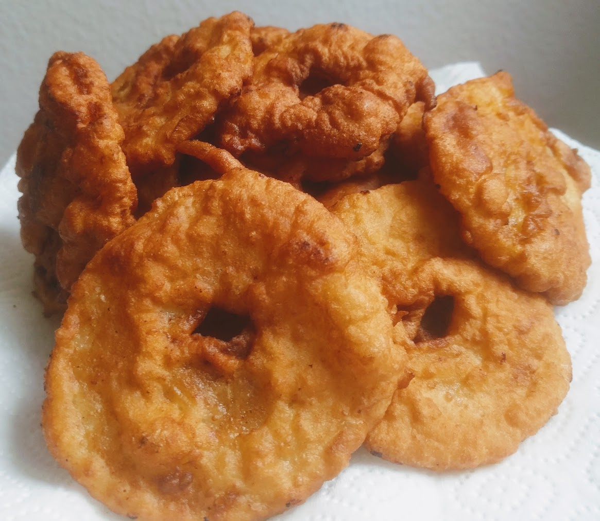

Beignets aux pommes

Pour 3 personnes :
- 120g de farine
- Un demi-sachet de levure chimique
- Un œuf
- 20cL de lait (et un peu en rab' au cas où)
- Deux pommes
- Sel
- Huile de friture (ou de tournesol)
- Mélanger la farine, la levure et une pincée de sel dans un saladier, et faire un puits.
- Mettre le blanc d'œuf dans un autre saladier et le battre en neige.
- Mettre le jaune d'œuf dans le puits, ajouter le lait progressivement en mélangeant, puis ajouter le blanc d'œuf. Il faut que ça forme une pâte homogène, à mi-chemin entre liquide et solide. On peut rajouter un peu de lait si c'est trop solide.
- Éplucher et évider les pommes, puis les couper en anneaux d'un demi-centimètre environ.
- Mettre un ou deux centimètres d'huile au fond d'une casserole, si possible à bords un peu hauts (pour éviter qu'il y ait trop d'éclats d'huile). Faire chauffer jusqu'à ce que ça fasse crsh quand on met
le doigt un bout de pomme dedans.
- Faire tremper chaque anneau dans la pâte, pour qu'il y en ait de chaque côté, et les mettre successivement dans l'huile de friture, environ deux minutes de chaque côté. Il faut que les anneaux surnagent, sans trop se toucher les uns les autres (donc il faut y aller progressivement, quelques anneaux à la fois seulement). Les enlever quand ils sont bien bruns des deux côtés, et les poser sur une assiette couverte de papier absorbant.
- Déguster immédiatement, en saupoudrant de sucre, ou bien de Nutella, ou bien avec de la glace à la vanille.
Remarque : ça peut évidemment se faire avec à peu près n'importe quel autre fruit.
Retour à la liste des recettes